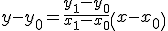
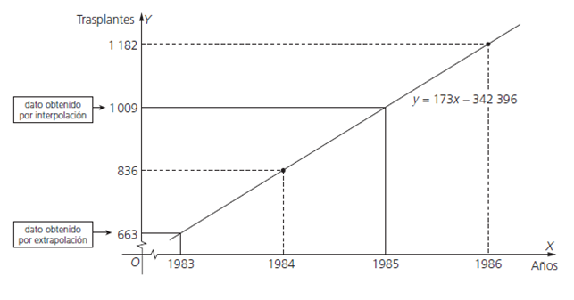

Funciones.Interpolación
lineal
Para hacer interpolación lineal, buscamos dos puntos que tengan en medio el valor de la imagen que necesitamos y hallamos la fórmula de la recta que pasa por ellos para utilizarla para estimar la imagen a interpolar. Si quisiéramos extrapolar cogeríamos los dos valores mayores o menores para hallar la recta.
Si (x0,y0),(x1,y1) son las coordenadas de los puntos “cercanos”, la recta tendrá la fórmula:

Bastaría sustituir la x y el valor de y nos daría la estimación.
Ejemplo. El número de trasplantes de riñón efectuado en España en el año 1984 fue de 836, y en el año 1986 fue de 1182. Usando la interpolación lineal, determina el número de trasplantes que se efectuaron en el año 1985 y en el año 1983.
La expresión de la función de interpolación lineal que pasa por los puntos (x0, y0) = (1984, 836); (x1, y1) = (1986, 1 182) es: y = 173x – 342 396
El número de trasplantes efectuados en el año 1985 se obtiene por interpolación:
y (1985) = 173 · 1985 – 342 396 = 1 009
valor que se ajusta bien al número real de trasplantes que se efectuaron en 1985 y que fueron 968.
El número de trasplantes que se efectuaron en el año 1983 se obtiene por extrapolación:
y (1983) = 173 · 1983 – 342 396 = 663
valor que se aproxima mucho al real, ya que en 1983 se hicieron en España 688 trasplantes.

Ejercicio. En un negocio recién abierto, la primera semana hubo 150 clientes que supusieron unos ingresos de 3600 €, en la 2ª semana 200 clientes que supusieron ingresos de 5600 euros.
a) Halla la función de interpolación lineal que relaciona los ingresos con el número de clientes.
b) ¿Cuántos ingresos generarían 190 clientes?
c) ¿Cuántos clientes se necesitarían para generar 7000 euros de ingresos?
Soluciones: a) f(x) = 40x - 2400; b) 5200 €; c) 235 clientes
Obra publicada con Licencia Creative Commons Reconocimiento No comercial Compartir igual 3.0